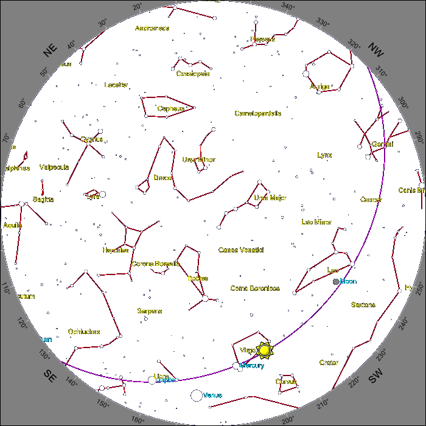

The Night Sky Now -

Night Sky + 2 Hours (12:20:55)
*Note: The actual position of the sun is not the horoscope constellation (shown in red in parentheses) for today's date, making astrology complete nonsense!
Credit: www.heavens-above.com
Observing
|
| Solar Noon |
| 12:16:36 (GMT) |
| Sunset |
| 20:10:24 (GMT) |
| Civil Twilight |
| 20:56:15 (GMT) |
| Nautical Twilight |
| 22:01:29 (GMT) |
| Astronomy Twilight |
| N/A |
| Zodiac Constellation |
| Cancer (Leo)* |